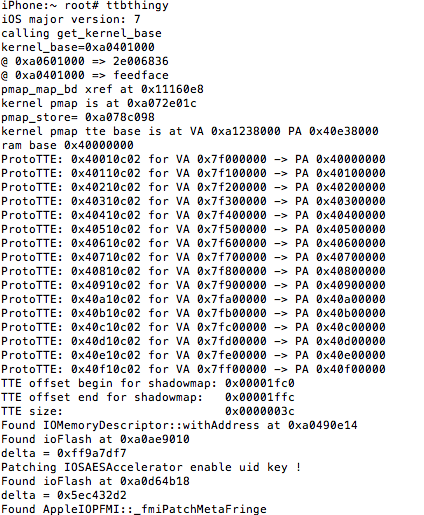
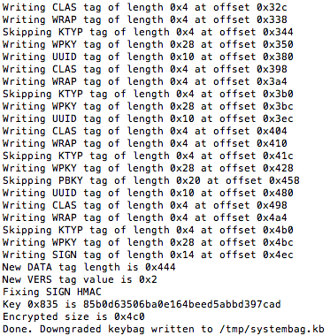
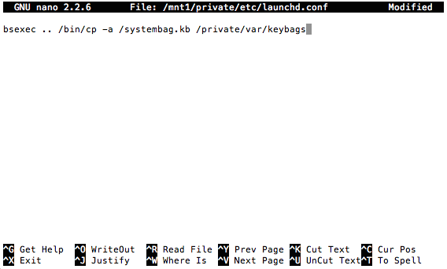

iOS 5 dualboot
This article describes differences between dualbooting of iOS 6 (main parts of the guide are dedicated for it) and iOS 5Preparing RootFS
Everything’s same as for iOS 6Partitioning
Everything’s same either, with the exception that you must add at least 50-75 MiBs for second System partition. iOS 5 has no PreinstalledAssets at /var/mobile/Library/PreinstalledAssets, as result when you move /var/* to a Data partition, not much space is freed. That’s especially important for the devices, whose baseband firmware isn’t flashed to a baseband itself, but is loaded from a filesystem, — iPhone 4s and iPad 3, if we count only those which support iOS 5. Add at least 75-90 MiBs, if you’re dualbooting one of theseRestoring RootFS
Absolutely same as for iOS 6. ASR will grow size of restored root filesystem to the size of partition automaticallyModifying filesystems
Modifications for a Data partitions are same as for iOS 6, with the exception that there’s no need to remove all files if you’re on something lower than iOS 9. Also we need few other modifications, so don’t unmount it at this pointUnfortunately, iOS 5 doesn’t support no-effaceable-storage, which is convenient to solve data-protection related problems. That’s why you have to create keybags folder on a Data partition:
mkdir /mnt2/keybags
If you’re on iOS 6 or 5, you already can copy your current system keybag to a new Data:cp -a /var/keybags/systembag.kb /mnt2/keybags
...because iOS 6 and 5 keybags are compatible. If not you must downgrade it first. Run ttbthingy to unlock using of UID-key:ttbthingy
Sometimes it’s needed to run it twice
Then run fixkeybag to actually downgrade the keybag:
fixkeybag -v2
Now, if you’re not on iOS 9 you can copy downgraded keybag too:
cp -a /tmp/systembag.kb /mnt2/keybags
Finally you can unmount your new Data partition (and patch its attributes if you’re on iOS 9)In case of iOS 9, we’ll make our keybag be copied while booting:
nano /mnt1/private/etc/launchd.conf
Copy this line and save the file:bsexec .. /bin/cp -a /systembag.kb /private/var/keybags
Copy the cp command, since there’s no one in iOS originally:
cp -a /bin/cp /mnt1/bin
And copy your downgraded keybag to the root of new System partition:cp -a /tmp/systembag.kb /mnt1
Important note: you must recopy your system keybag every time you change a passcode. Way Out allows running arbitrary scripts/Mach-Os right before booting, so you can automate the processImportant note #2: don't do anything data-protection related on a dualbooted iOS 5, like: changing passcode, obliteration, etc. This will cause regenerataion of keys in Effaceable Storage, first system will die
Installing fixkeybag
It’s not needed and even dangerousPacking baseband firmware
Unlike iOS 7+ iOS 5 wants baseband firmware to be packaged in ZIP archive and unlike iOS 6 it wants it to be stored at /usr/standalone/firmware So if you’re on iOS 6 you can simply copy a baseband firmware:cp -a /usr/local/standalone/firmware/Baseband/Trek/Trek-personalized.zip /mnt1/usr/standalone/firmware
Where Trek it may be Mav4 in case if you've got iPad 4. Same applies to the command below
If you’re on iOS 7 or newer:
cd /usr/local/standalone/firmware/Baseband/Trek
zip -r0 /mnt1/usr/standalone/firmware/Trek-personalized.zip *
Patching bootchain
iBSS and iBEC
Patches are sameNote: for older devices like iPhone 3GS it's highly recommended to use alternative untether method